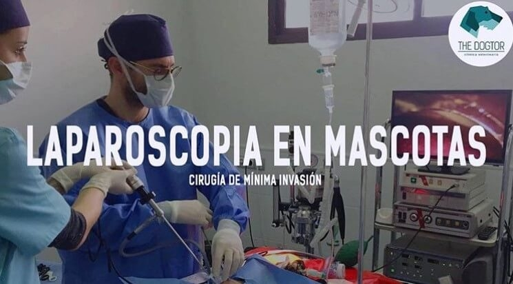
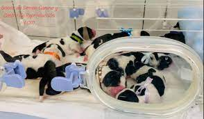

VETERINARIA MIS 4 PATAS
Emergencia las 24 horas
Unidad de Video Endoscopia y Terapéutica
Somos los pioneros, con más de 12 años de experiencia ofreciendo el servicio de endoscopia diagnóstica y terapeútica para caninos, felinos y animales silvestres.
Unidad de Cirugía de Mínima Invasión Laparascópica
Ofrecemos el servicio de Cirugía de Mínima Invasión Laparascópica, a través de un Staff de médicos altamente calificados, infraestructura y equipamientos de última generación.
Unidad de Medicina Reproductiva y Banco de Semen
Contaos con los últimos protocolos diagnósticos y terapeúticos para el manejo de las enfermedades que afectan el sistema reproductor de nuestras mascotas. Y desde hace dos años, venimos ofreciendo el servicio de congelamiento de semen, bajo los protocolos de CLONE USA.